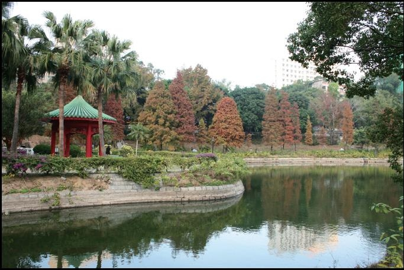
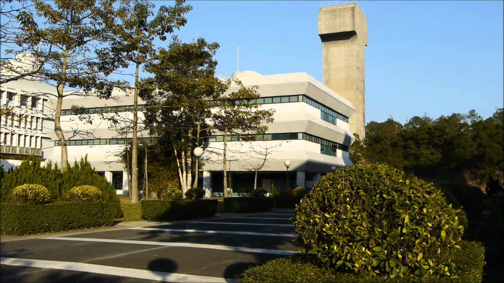
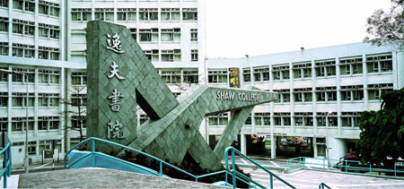

中山大学-香港中文大学 2+2
中山大學和香港中文大學於二零零八年簽訂了聯合培養本科生協議。兩校共同培養工程學院本科生，名為 “2+2本科生計劃”：前兩年在中山大學學習，後兩年前往香港中文大學學習。目前有四个专业可供学生选择。
Life in CUHK
本部分将按照书院分类进行介绍，因为编辑人手限制，暂时先介绍四大书院（崇基，联合，新亚，逸夫），新书院后续进行补充。着重介绍书院生活以及吃货最关注的膳食质量(部分摘自MUA新生手册以及学校官方网站)。
对许多中大毕业生来说，在书院结识的友伴，书院宿舍内的某次促膝长谈或炽热讨论，都是日后回忆的重要片段。书院是紧密的小群体，师生密切交流，朋辈一同成长。所有中大全日制本科生都可选择一所书院，成为该院的一分子。每所书院都是独树一帜的，有各自的文化，但汇聚在一起，却塑造了中文大学的精神面貌。
书院是和谐融洽的群体，各有宿舍、饭堂及其他设施。书院着重全人发展，举办各种活动，让学生为自己的大学生活添上色彩。这些活动包括海外交流及外访计划，研讨会，师友计划，社区服务，语文、资讯科技和领袖才能训练，还有多种学生社团组织的课外活动。
书院提供众多非形式教育机会，与正规课程相辅相成，旨在培养学生的人际关系技巧、文化品味、自信心和责任感。学生更可善用奖学金和经济援助计划充分发挥个人成长的潜力。许多中大毕业生都说，书院生活是他们在学期间最难忘的回忆。
崇基学院于1951年由香港基督教教会代表创办，为本地首所基督教中文专上学院，以切合当年社会对高等教育的需求。学院与欧洲和美国的著名教育团体联系紧密。崇基学院提倡文理兼备的教育，并举办极受欢迎的游学团及海外学习计划。
联合书院于1956年由广侨、光夏、华侨、文化及平正五所专上学院合并组成，五院原为广州及其邻近地区的私立大学，与香港关系密切。书院设有各种计划，以培养创新及企业精神，并推动德育、环境保护及身心健康等特色活动。书院学生可参加交换计划往世界各地专上学府体验生活。
新亚书院于1949年由以钱穆博士为首来自国内的一群学者兴办，创校宗旨在承续中国传统文化，并使其与现代学术结合，令学生不忘本之余，且有能力应付现代社会的挑战。书院与耶鲁大学关系密切，亦与中国、台湾、日本和新加坡多所大学和企业合作开办各类交换、研究及实习计划。
逸夫书院于1986年由私人捐款成立，以辅导学子培养品德和追求学问为宗旨。文康设施装修在2009年完成后，书院有一个新的室内运动场，有助提升书院精神和凝聚力。书院又装修了学生宿舍，促进舍堂生活。书院并举行高桌晚宴和提供服务社区机会，扩阔学生眼界。
